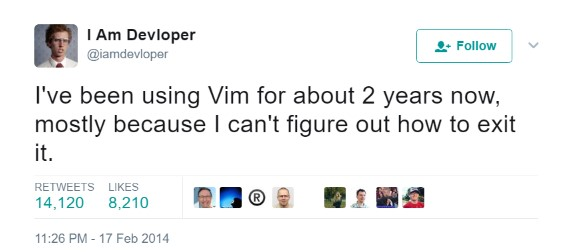

Command Line Basics
Chuck Frainchuck@chuckfrain.net
Command Line Basics
Links to this presentation
| html | github |
|---|---|

|
Different *nixes
There are many different *nix versions and cousins. The flavors include *BSD, Linux, Unix, and others. Each version and implementation has some unique features to their shells. Some popular versions and distributions are:
- Red Hat/CentOS
- Fedora
- Ubuntu
- SUSE
- Debian
- Solaris
- FreeBSD
- MacOS/OS X
- AIX
- OpenBSD
File structure
- File locations differ between distributions
Common directories
/(Root of the file system)/root(root user’s home directory)- This is not the root(
/) of the file system
- This is not the root(
/home/$USER(Your files)/etc(System configuration files)/media(Mount points for removeable systems, primarily linux flavors)/opt(Typically software packages installed in one place)/var(Variable files that change regularly)/var/log(Common default location for log files)
CLI installers
yum install <package>
apt-get install <package>
yum/dnf- Red Hat
- CentOS
- Fedora
- SUSE
apt-get- Debian
- Ubuntu
Basic Navigation
- CasE SensItiVity MatTERs
- tab completion to complete command names, paths, or files
pwd(Print working[current] directory)ls(list files in directory)cd(Change Directory)cd /path/to/directorychanges from the current directory to the defined directorycd ~changes from the current directory to the user’s home directorycd ..changes from the current directory to the directory one level upcd ../../path/to/directorychanges from the current directory to two levels up then down to the new directorycd -changes from the current directory to the previous directory
Permissions
The following is the output of ls -lah (long list,all files,human readable)
total 40
drwxr-xr-x 6 chuck staff 204B May 25 2016 .
drwxr-xr-x 16 chuck staff 544B Oct 24 21:25 ..
drwxr-xr-x 5 chuck staff 170B May 25 2016 fixtures
-rw-r--r-- 1 chuck staff 6.0K May 25 2016 .coffee
-rw-r--r-- 1 chuck staff 2.8K May 25 2016 image-factory-spec.coffee
-rw-r--r-- 1 chuck staff 6.0K May 25 2016 main-spec.coffee
-rw-r--r-- 1 chuck staff 7.5K May 25 2016 main-url-support-spec.coffee
---------- - ----- ----- ---- ------------ ----------------------------
| | | | | | |
| | | | | | + File Name
| | | | | |
| | | | | +----------- Modification Time
| | | | |
| | | | +------------------- Size (in bytes)
| | | |
| | | +--------------------------- Group
| | |
| | +---------------------------------- Owner
| |
| +-------------------------------------- Links
|
+----------------------------------------------- File Permissions(Diagram from linuxcommand.org)
drwxr-xr-x |
TUUUGGGOOO |
| Field | Definition |
|---|---|
T |
File Type
|
U |
User/Owner Permissions |
G |
Group Permissions |
O |
World/Other User’s permissions |
rwx
| Character | Effect | Numerical Value |
|---|---|---|
r |
read |
4 |
w |
write |
2 |
x |
execute |
1 |
chmod changes the permissions of the file or directory
| Command | Permissions |
|---|---|
|
-rw-r—r-- |
|
-rwxrwxrw- |
|
drw-r-xr-- |
Command Line Switches
Commands are often followed by one or more switches at the command line.
When one - is used, each character following it is an option.
When two '--' are used, the full string is considered the option.
ls -help attempts to run the ls command with the h,l,p options (e is invalid)
ls --help prints the ls help file to the screen
|
Important
|
In some fonts, a -- notation will appear as a single - when rendered.
|
Useful Commands
| Command | Function |
|---|---|
|
For editing files |
cp |
for copying files |
mv |
for moving/renaming files |
rm |
for removing/deleting files or directories |
find |
for finding files |
grep |
for finding stuff in files |
tail/head |
for viewing end/beginning of files |
service/systemctl |
for starting/stoping/controlling services |
less |
show the contents of a file at the cli |
man |
for learning how to use commands |
chmod |
for modifying file permissions |
tar |
for compressing and decompressing files |
sudo |
for running a command as a different user, typically root |
Editor Talk
- vi/vim
- emacs
- pico/nano
This is the part where I explain why the next slide is about vi/vim and there aren’t slides about emacs or pico/nano commands.
- Its everywhere
vi/vim commands

vim filename - opens the designated file in normal mode
:help - displays the vim help file
/texttosearch - search for text in the document (case sensitive)
i - insert mode to edit the file
esc - return to command mode
:wq - write/save the file and quit the editor
:q! - quit the editor without saving the changes
cp command
cp filename /path/to/copy/to
cp filename newfilename
copies the file from the current location/name to the new location/name
cp -R /path/to/directory /path/to/new/directory
copies the the files and directories from the specified directrory to the new location
mv command
mv filename /path/to/new/location
mv filename newfilename
moves the file from the current location/name to the new location/name.
mv also acts as the rename command.
rm command
rm filename
removes(deletes) the indicated file
rm -rf directoryname
removes(deletes) the indicated directory and all of its contents, including hidden files
find command
find . -name 'filename.txt'
Searches for the filename.txt file in the current directory and sub directories
Other popular factors to search on include owner, time, type, size, file types
grep command
grep -iR pattern Documents/
Searches files for the phrase pattern in a case insensitive(i) manner in and below(R) the local Documents directory.
head/tail commands
head -n 15 filename.txt
head displays the first lines of a file (10 by default, 15 in the above example)
tail -n 15 filename.txt
tail displays the last lines of a file (10 by default, 15 in the above example)
tail -f filename.txt
The above use of the tail command with the -f flag continually rereads and displays the end of the file.
This is useful when monitoring a log file in real time, for example.
Use <ctrl>-c to stop reading the file.
service/systemctl commands
The service and systemctl commands control the status of services on the system.
The following examples are for controlling the Apache web server status.
systemctl {start,stop,restart,status} httpd
service httpd {start,stop,restart,status}
man command
man <command>
The man command displays the manual (help) page for the command indicated.
less command
less filename
Displays the contents of a file in the terminal window. Use the up and down arrows to navigate the file. Use a forward slash followed by text to search for to find particular types.
/texttosearchfor
tar command
tar zxvf filename.tar.gz
Extracts the contents of the tar.gz file to the current directory
tar zcvf newcompressedfile.tar.gz file1 file2 file3
Creates a new compressed file containing all the files indicated in the command
tar zcvf newcompressedfile.tar.gz /path/to/files
Creates a new compressed file containing all the files in the indicated directory
sudo command
sudo ls /var/log/messages
By default, runs a command as the root user.
Adding -u <user> will specify a different user to run the command as.
Pipe commands from one to another on a single line
The pipe | symbol passes the output of a command to another command.
The following command will list the contents of the current directory in a long format.
The grep command then filters and displays only the lines of text that contain the word filename in a case insensitive manner.
ls -l|grep -i filename
-rw-rw-r--. 1 chuck chuck 0 May 28 20:01 FILENAME.ADOC
-rw-rw-r--. 1 chuck chuck 0 May 28 20:00 filename.csv
-rw-rw-r--. 1 chuck chuck 0 May 28 20:01 FileName.jpg
-rw-rw-r--. 1 chuck chuck 0 May 28 20:00 filename.txtThe following command will run the ps -ef command and show the results that match the phrase ssh on the screen
ps -ef|grep ssh
Other interesting commands and concepts to follow up on
These are commands that are useful to know but fall into a niche category.
vimdiff- for showing the differences between two text filesnetstat/ss- for showing open portsfirewall-cmd- for configuring firewall rulesnmtui- for configuring network manager from the command linegit- version control for filessed- Stream line editor to change file contents without opening a full editormd5sumsha1sum(and others) creates a unique hash of a file to easily compare two or more filessshcreates a secure shell connection between two computersscpsecurely copies files between computers^nreads as ctrl-n!!adds the last command to the current command line- selinux - kernel security model that has been known to interfere with programs running correctly
- environmental variables - easily share configuration settings between applications and processes such as
$USER,$HOME,$EDITOR,$BROWSER - regex - Regular Expressions are your friend (once you make friends with them)
Dangerous commands
These commands should not be used unless you really understand what you’re doing with them.
rm -rf / - Will delete the entire file system
mv file /dev/null will move the file to a system device that will delete the file
:(){:|:&};: - a fork bomb which creates a function and executes it until the system freezes
$COMMAND > /dev/sda - overwrites data on the block device, in this case the main drive
mkfs.ext4 /dev/sda - formats the block device using the ext4 filesystem, in this case the main drive.
mkfs. may be a variety of filesystem types.
For more, search for dangerous linux commands in your favorite search engine
Bash system files
.bashrc - configuration file for non-login shells
.bash_profile - configuration for login shells
.bash_history - history of the recent commands run in the bash shell
Troubleshooting
log files are your friend
Common Location — /var/log
Read recent system messages — tail /var/log/messages
Print Kernel messages — dmesg
Resources
vimtutorto learn vim from the command line- Vim Adventures https://vim-adventures.com (pay past level 3)
- Vim Casts video tutorials by Drew Neil http://vimcasts.org
- Command Line tutorial http://linuxcommand.org/lc3_learning_the_shell.php
- Command Line Magic https://twitter.com/climagic
- Explains the entered command based on the man page http://explainshell.com
- Test your regex expressions http://regex101.com
- Practice your knowledge of regex http://regexcrossword.com
Links to this presentation
| html | github |
|---|---|
|
|